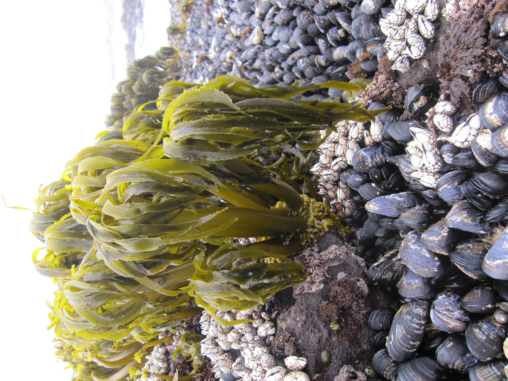
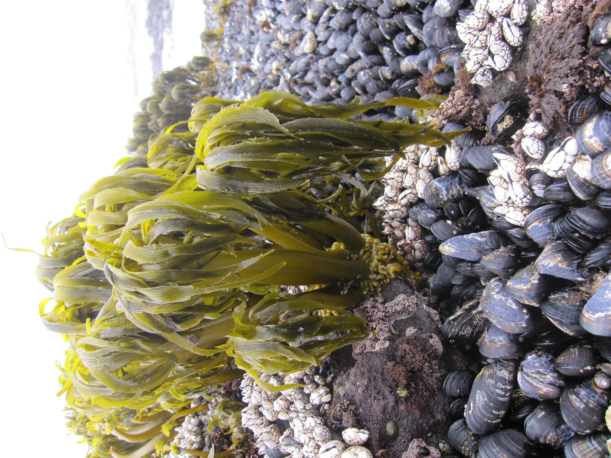
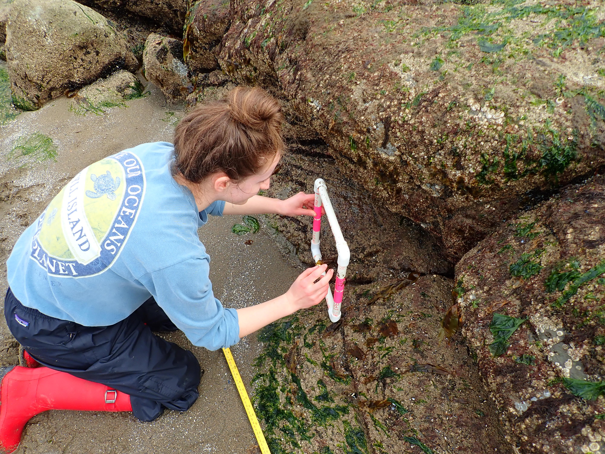
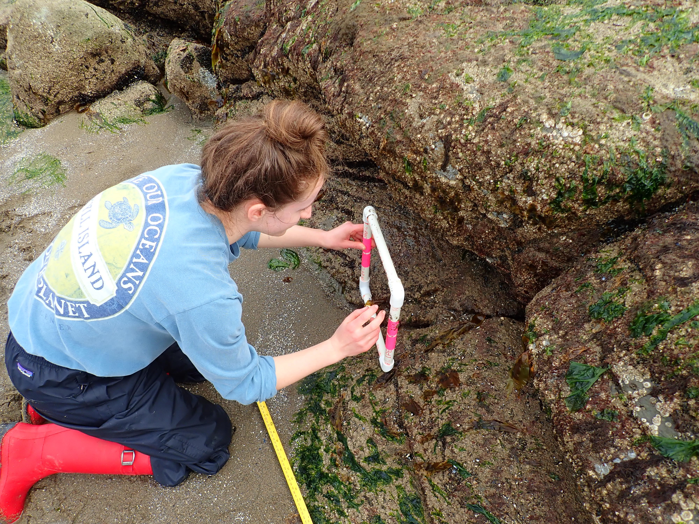

Who am I?
I am a microbial ecologist, avid coder, and triathlete.

 

 



Data Science and Open Data Access
A lot of research time and money is spent collecting data. However these data are often lost, not usable due to poor record keeping/being behind a pay-wall, or the analysis cannot be replicated. I am determined to change this through my own work and hope to help others do the same.
Formal Data Analysis Consulting Experience
- Data Analysis and Visualization GAA for the UBC Library: I provide one on one consultation for UBC students, staff, and Alumni who need help performing their data analysis in R and SPSS. Additionally, I develop and deliver workshops for the UBC Research Commons aimed at beginner R users.
- Living Data Project Data Rescue Intern: I cleaned over 20 years of field data, which directly lead to an open access publication in Ecology.
- Illumina Data Analyst for the publication "Manipulation of the seagrass-associated microbiome reduces disease severity".
Other Data Accessibility Projects
- Gathering baseline macoralgae data at an urban intertidal site: There is a lack of publicly accessible baseline data in ecology in general. My colleagues and I are working to change this for our local macroalgae (big seaweeds) by conducting monthly transect sampling at Stanley Park. We publish our data on an open access database and I developed an RShiny app for easier data visualization.
Kelps and Microbial Ecology
Kelps are vital for the health of temperate coastlines, providing habitat, food, and modifying water conditions within their canopy. Additionally, kelp farming is a growing industry, already worth billions of dollars annually. However, wild and farmed kelps are vulnerable to climate change. Thus, these valuable services kelp provide are at risk.
Microbes, bacteria in particular, have been used as a toolkit to increase terrestrial crop resistance to unfavorable conditions for a long time now, but we have a much more limited understanding of the bacterial community of kelps and other marine life than in terrestrial systems.
Through my PhD thesis work in the Parfrey lab, I am directly addressing this lack of understanding by conducting highly replicated lab and field studies and partnering with the kelp growing industry. I am passionate about challenging established assumptions about how kelps will respond to climate change. I pull in other researchers' datasets to stress test my own findings and work in R to produce highly replicable and accessible data analysis pipelines.
Thesis questions and goals
- How does salinity alter the microbiome of sugar kelp (Saccharina latissima)? *Currently available as a pre-print on